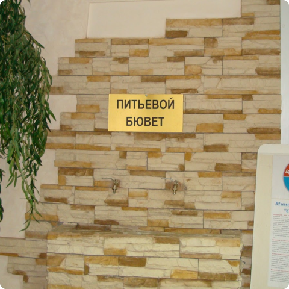
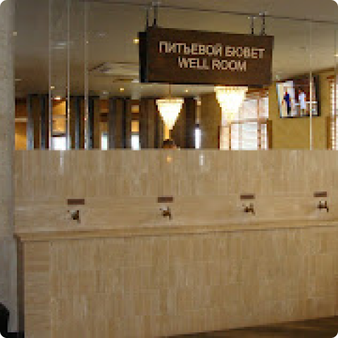
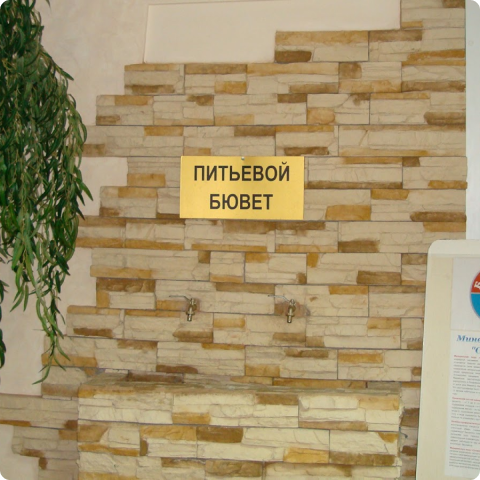
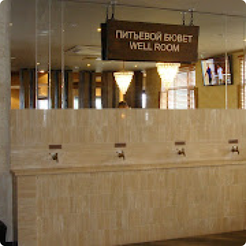

Фонд развития питьевого курорта Сочи доктора Ваганова И.В.
ОГРН 1212300065317 ИНН 2366032174
основан ноябрь 2021 г.

НАШЕ ПРЕДЛОЖЕНИЕ
Мы предлагаем полный цикл работ по организации и обслуживанию питьевого бювета на Вашей территории.
Наши приоритеты
Безопасность и качество


Примеры наших работ
Мамайское месторождение. Источник минеральной воды "Сочинская". Автор идеи и исполнитель Ваганов И.В. Первый народный бювет города Сочи. Пансионат "Бургас"

Санаторий "ROSA SPRINGS"
Посёлок Роза Хутор. Высота над уровнем моря 1200 м.

Санаторий "Янтарь"
Пансионат "Бургас"

Санаторий "ROSA SPRINGS"
Посёлок Роза Хутор. Высота над уровнем моря 1200 м.

Санаторий "Янтарь"

Эксклюзивное оборудование
Транспортное обеспечение
Мы используем собственный транспорт
Микроавтобус для доставки оборудования.Публикации о наших бюветах